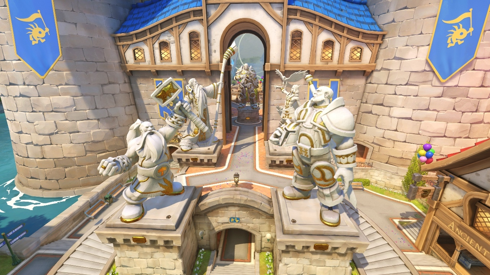
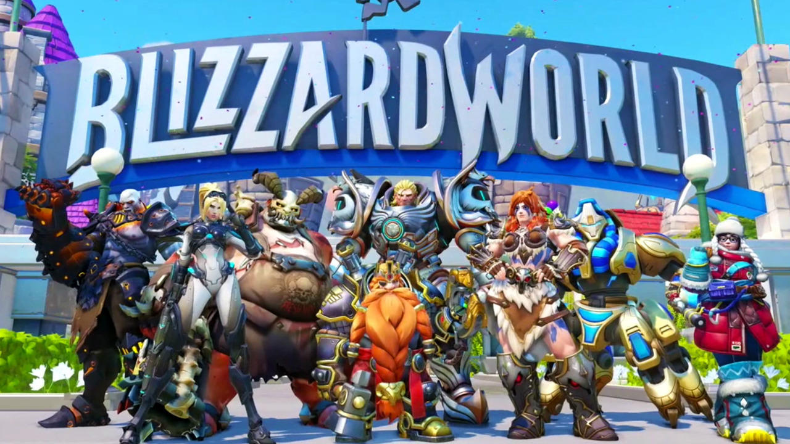

Blizzard World er den nyeste tilføjelse til vores elskede fps Overwatch. Banen er designet omkring alle Blizzards forskellige spil og temaer. Der er mange genkendelige elementer i banen, som man kender fra de andre spil. Ting som f.eks. the Darkmoon Faire, Gates of Orgrimmar og Hearthstone Tavern, blandt andre, er med i banen. Blizzard har i lang tid givet hints til banen, men nu er den endelig ude.
Man kan hurtigt se alle sinde favorit spil og minder, komme til livs igennem Overwathcs nye hybrid bane. Første ppoint er assault, hvorefter resten af mappet er payload, som vi kender fra andre maps som King's Row, Numbani og Hollywood. Efter udgivelsen af Moira glæder vi os alle til at komme ind i mappet, og den nye spille stil, som det kommer til at tilbyde.
Blizzard har været ude med denne kommentar:
“Blizzard World also offers a challenge with the way it is set up with being partially payload motivated, and partially assault. Naturally Kaplan joked that many players don't know what the Payload is - which, many of the Overwatch players couldn't help but to get a chuckle out of. Still, the map looks exciting and is sure to keep those looking for something new intuned with the world of Overwatch.”
Med det nye map, har Blizzard også udgivet en masse nye skins til vores yndlings karaktere, såsom Reinhardt, Widowmaker og Doomfist. Alle de nye skins kan se på følgende billede.
